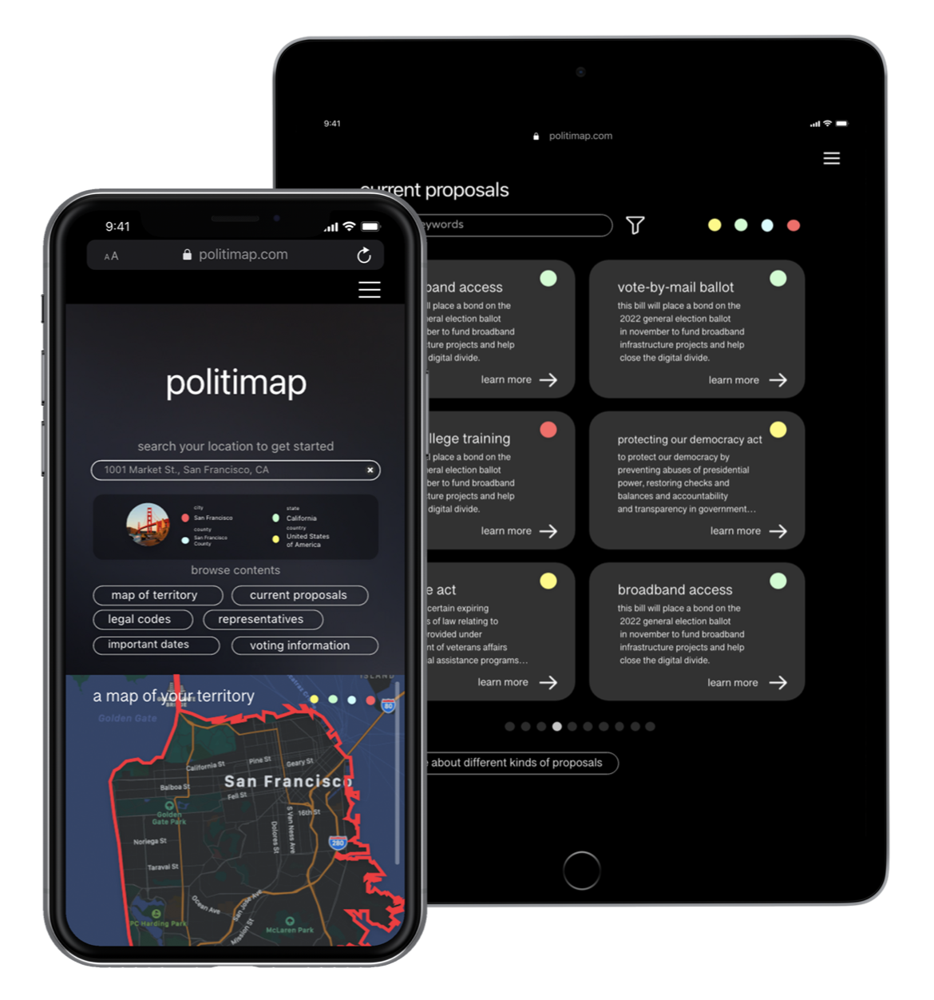

understanding the user...


politimap is a reponsive web app that makes it easier for voters to access political information.
when users input their location, the app scrapes relevant information from government authorized websites and presents it to them.
november 2021
to december 2021

background...
it's hard to keep track of political information because there's too much to process, it's all over the place, and overwhelming
design an app that presents political information to users in way that is accessible
ux designer, designing the app from conception to delivery
conducting interviews, paper and digital wireframing, low and high-fidelity prototyping, conducting usability studies, accounting for accessibility, and iterating on designs
understanding the user...
user research summary...
understanding user pain points...
working adults are too busy to do their own political research
political information is buried behind several webpages and hard to access
government freedom of information websites don't offer the best user experience.
voters want access to information that they know is reliable, and not manipulated by private interests
meet one of the personas...
their journey map...
paper wireframes...

digital wireframes...

low-fidelity prototypes...
usability study findings...
mockups...
landing page on tablet device, after usability studies
representatives page on mobile device, after usability studies
high-fidelity prototypes...
accessibility considerations...
i provided access to users who are vision impaired through adding alt text to images for screen readers.
by enabling readibility in different languages and text-to-speech audio in popular languages, we open the app to more voters.
takeaways...
voters think that the app is useful and is going to help them become more civically engaged.
“i didn't know all this stuff was going on! i'm excited to keep up with it all.”
—feedback from a user
while designing politimap, i learned that accessibility is important in designing an app that is going to be used about just about everyone. learning from users allowed me to discover new journey possibilities i had never thought of!
next steps...
conduct another round of usability studies to validate whether the pain points of the users have been addressed.
we expand our dataset based on what information voters want to know about
politimap does not enable discussions, it just shows the information. it would be interesting to walk through a feature where users can tweet out information, or comment their thoughts right on the page.